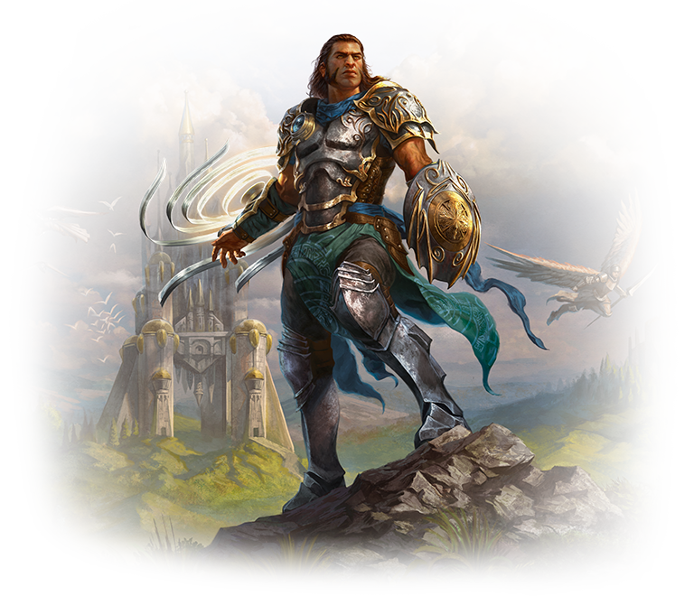
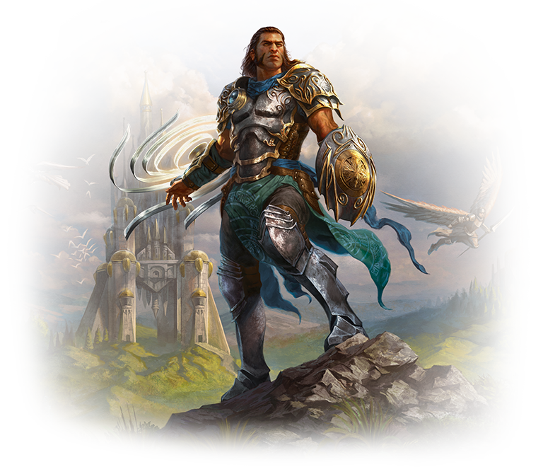

-
Gideon Jura
 
História
Este poderoso mago branco é impelido pela lealdade e pratica a hieromancia, a magia da justiça sagrada. Seus fortes princípios morais e seu senso de dever lhe foram úteis como agente da Ordem de Heliud, uma organização que tentou impor a lei ao plano de Regatha. Quando a piromante Chandra Nalaar se tornou um obstáculo aos objetivos da Ordem, eles enviaram Gideon para interceptá-la no plano de Kephalai. Ela estava tentando, pela segunda vez, roubar uma poderosa magia de fogo com um mapa para o Olho de Ugin, escondido no plano de Zendikar. Nunca antes uma presa de Gideon fora tão ardilosa, elusiva e cheia de recursos. Em Kephalai, Gideon a capturou brevemente, mas ela escapou. Após segui-la até o plano sombrio de Diraden, ele se tornou um aliado improvável de Chandra quando os dois uniram forças para escapar das armadilhas do regente vampírico do plano, Velrav. Somente após seu retorno a Regatha Chandra descobriu que Gideon estava à serviço da Ordem e que teria que se render para impedir que seu mundo adotivo fosse destruído. Com a ajuda de Gideon, Chandra sobreviveu à perseguição, e fez com que ele questionasse as verdadeiras motivações da Ordem. Não demorou muito para que ela partisse novamente, em busca do Olho de Ugin. Depois de meditar bastante, Gideon decidiu seguir Chandra até Zendikar, acreditando poder ajudá-la a se manter viva no plano traiçoeiro e imprevisível. Ao chegar lá, Chandra já havia partido e Zendikar estava sitiada pelos seres ancestrais destruidores de mundos chamados Eldrazi. Agora, Gideon busca aliados pelo Multiverso para ajudarem a salvar Zendikar da destruição.